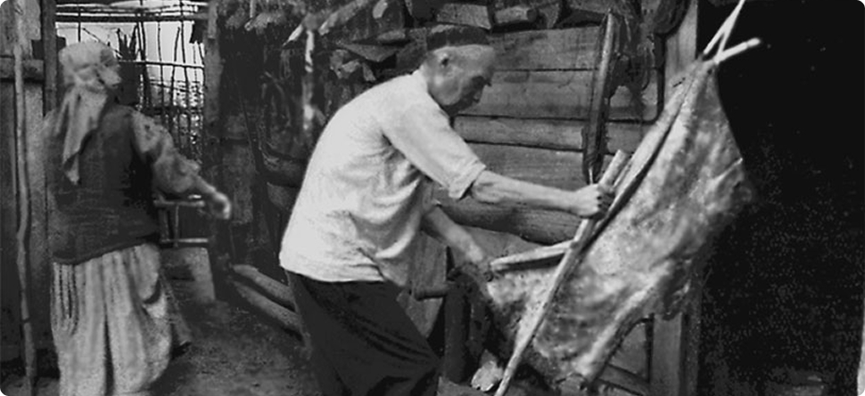

Башкиры
Территория и численность
Река Белая. Автор: Николай Сачков
- Республика Башкортостан — 1 268 806 чел.
- Челябинская область — 128
- 071 чел. Тюменская область — 38 829 чел.
- Оренбургская область — 36
- 181 чел. Ханты-Мансийский АО — 29 717 чел.
- г. Москва — 5 715 чел.
Религия
Согласно Конституции Башкортостана, ни одна религия не может быть признана государственной. Однако большинство населения республики придерживается ислама суннитского направления.Эта религия проникла на Южный Урал еще в X веке через Среднюю Азию и Волжскую Булгарию. Окончательное закрепление ислама произошло при Узбек-хане, когда он стал официальной религией Золотой Орды. В этот период в Башкирии активно распространялось мусульманское учение.
Как известно, по договору Ивана Грозного с местными племенами им гарантировалась свобода вероисповедания, однако вскоре эти обещания стали лишь формальностью. Центральная власть стремилась контролировать духовную жизнь региона, и ислам начал восприниматься как символ сопротивления российскому влиянию. Главным религиозным центром Башкирии была Азиевская мечеть, которая в периоды восстаний превращалась в оплот борьбы. В 1736 году храм был разрушен отрядами под командованием И. К. Кириллова.
Позже Уфа превратилась в центр мусульманской жизни России, чему способствовало ее расположение на границе Европы и Азии. В 1782 году здесь был создан муфтиат, на основе которого впоследствии сформировалось Оренбургско-Уфимское магометанское духовное управление.
После революции 1917 года большевики ликвидировали все мусульманские организации, оставшиеся от прежней власти, включая те, что были созданы правительством Башкурдистана. Началась политика насаждения атеизма. Однако в 1990-е годы интерес к исламу возродился: стали строиться мечети, издаваться религиозные книги.
Сегодня в Уфе располагаются духовные управления мусульман как Башкортостана, так и всей России. По данным на 2002 год, в республике насчитывалось 609 мусульманских общин: 334 подчинялись башкирскому ДУМ, 271 — общероссийскому, а 4 — московскому Духовному управлению мусульман «Ассоциация мечетей». В регионе зарегистрировано 464 мусульманских культовых здания. С 1991 года в Уфе работает Исламский институт имени Р. Фахретдинова.
Язык
Формирование башкирского языка как самостоятельного началось в XIX веке. До этого, с XII по XX век, местное население пользовалось урало-поволжским вариантом тюркского языка. Первоначально для письма применялись древнетюркские руны, а после принятия ислама в X веке — арабская графика, на основе которой стала складываться литературная норма.
В XIX столетии получил распространение разговорный башкирский язык, а также предпринимались попытки создания его кириллической письменности. Над этим работали такие лингвисты и просветители, как Н. И. Ильминский, В. В. Катаринский, А. Г. Бессонов и М. А. Кулаев. Однако их алфавиты и учебные пособия не получили широкого применения. Интересно, что даже при советской власти первый официальный башкирский алфавит был создан не на кириллической, а на арабской основе.
При разработке литературного стандарта возник спор о выборе диалектной базы. Изначально предпочтение отдали куваканскому диалекту как наименее близкому к татарскому. 18 февраля 1923 года была образована Центральная комиссия по внедрению башкирского языка, и уже в декабре того же года утвердили арабский алфавит. Однако глава комиссии выступал за юрматынский диалект, что привело к компромиссу: в литературный язык вошли элементы обоих диалектов. Например, формы будущего времени взяли из куваканского, а словообразовательные аффиксы — из юрматынского.
Арабская письменность использовалась до 1930 года, хотя уже в середине 1920-х началась разработка латинизированного алфавита. В 1927 году Всесоюзный центральный комитет нового тюркского алфавита утвердил единый яналиф для тюркоязычных народов СССР. В течение 1930-х Башкирский НИИ языка и литературы адаптировал его к местным особенностям.
Однако в 1938 году Башкирский обком ВКП(б) принял решение о переходе на кириллицу. Соответствующий алфавит был утвержден в 1939 году, а с 1940-го стал повсеместно использоваться.
После распада СССР в республике активизировались меры по популяризации башкирского языка. С 2000 года начался перевод вывесок, указателей улиц и дорожных знаков на государственный язык. В 1993 году Министерство образования Башкортостана ввело обязательное преподавание башкирского в школах с нагрузкой от 1 до 8 часов в неделю. Однако эта инициатива встретила неоднозначную реакцию, и исполнялась она в основном факультативно. К 2006–2007 годам количество обязательных часов сократили до трех в неделю, но число школ, где преподавали язык, по сравнению с 1993 годом увеличилось.
По данным Всероссийской переписи населения 2020 года, башкирским языком владеют 1 086 423 человека в России, из которых 941 377 используют его в повседневном общении.
Башкирский язык. Источник: https://vkvideo.ru/video-212264882_456239352
Быт
Хозяйство
Основу традиционного хозяйства башкир составляло кочевое скотоводство, которое часто сочеталось с другими формами деятельности. Этот уклад жизни определял особенности материальной культуры – ремесла были тесно связаны с потребностями кочевников. Особенно развиты были кожевенное дело, войлоковаляние, ковроткачество и вышивка. Башкиры славились и как искусные металлурги: они изготавливали серебряные украшения, а также отливали из олова боеприпасы. После ряда восстаний царское правительство запретило башкирам заниматься кузнечным ремеслом. Примечательно, что именно башкирский промышленник Исмагил Тасимов выступил инициатором создания в Петербурге Горного училища (ныне – Горный университет).
Обработка овчины (д. Бурыл-Айгирово Курганской области)
Семейный уклад
В традиционной башкирской семье главенствующая роль принадлежала
мужчине. Женщина отвечала за домашний очаг, поддерживала порядок и
соблюдала строгие правила поведения.
Например, замужней женщине запрещалось общаться с посторонними
мужчинами. В старину замужние башкирки всегда носили головные
платки, что позволяло легко отличить их от девушек. Сегодня этот
обычай соблюдают не все.
Портрет замужней башкирки в традиционном уборе (профиль). Башкиры.
Жена не должна была расспрашивать мужа о его делах – считалось,
что муж сам расскажет важное, когда сочтет нужным. Измена для
женщины считалась тяжким грехом, тогда как мужчина мог иметь
несколько жен. Однако для новой женитьбы требовалось согласие
первой супруги, которая сохраняла главенствующее положение в семье
независимо от количества жен.
В современной башкирской семье сохраняется трепетное отношение к
семейным ценностям. С детства прививается уважение к старшим,
молодежь заботится о пожилых родственниках.
Многие башкиры знают свою генеалогию до седьмого колена и дальше.
Это не просто традиция: перед свадьбой тщательно проверяют
родословные, чтобы жених и невеста не оказались родственниками.
Жилище
Полукочевой образ жизни определял особенности жилищного
строительства. Башкирам требовалось как постоянное зимнее жилье,
так и легкие переносные конструкции для летних кочевий.
Летние юрты сооружали из войлока, дерева и кожи. Вход всегда
располагался с южной стороны. В центре находился очаг, дым от
которого выходил через верхнее отверстие. Внутреннее пространство
делилось занавесью (шаршау) на мужскую (правую) и женскую (левую)
части. В мужской половине хранилось оружие, охотничье снаряжение,
принимали гостей; женская служила кухней и спальней. Мебели не
было – вместо нее использовали ковры и подушки.
Башкир у своего дома. Фотография С. М. Прокудина-Горского, 1910 год
Зимние дома строились на каркасной основе с заполнением из глины, земли, соломы или дерева. Фундамент делали из камня и бревен, полы чаще всего были деревянными. Для обогрева использовали печь-чувал. В XIX веке стали появляться каменные и кирпичные дома с украшенными резными наличниками фасадами, часто расписанными геометрическими узорами.
Башкиры в домашнем быту. Зажиточная семья башкира-вотчинника Златоустовского уезда Уфимской губернии
Культура
Свадебные традиции
В башкирской свадебной традиции исторически преобладал брак по
сватовству, где ключевое значение имели взаимные чувства молодых.
Жених и невеста самостоятельно принимали решение о браке, после
чего получали одобрение родителей.
Процесс сватовства начинался с визита отца жениха к семье невесты.
После взаимного согласия обсуждались организационные вопросы:
сроки свадьбы, размер калыма и распределение расходов.
Башкирская свадьба. Источник: https://www.proural.info/foto/na-styke-kultur-kak-ufimtsy-sygrali-bashkirskuyu-svadbu-na-novyy-lad/
- 5-10 платьев для женской родни невесты
- алкогольные подарки братьям невесты
- обязательный махр (подарок лично невесте)
- Жених угощал их водкой
- Дарил платья женам братьев
- Женская родня устраивала банный обряд с шуточными испытаниями для молодых
Танцы и музыка
В башкирской хореографии существовала регламентация по полу и
возрасту. Это, очевидно, было связано с тем, что у башкир
существовали исключительно женские праздники, обряды, в которых
мужчины не участвовали. Хореографическое искусство башкир было
обусловлено характером труда и быта народа. В танцах нашли
отражение особенности хозяйственной жизни, образное восприятие
окружающей природы, прекрасное знание повадок зверей, птиц,
животных.
Коллективные пляски к концу XIX — началу XX вв. почти утратили
связь с древними религиозными верованиями. В целом в указанный
период коллективные танцы, исполняемые на различных празднествах,
носили игровой характер. Известно, что еще в XVIII веке круговые
танцы исполнялись на шаманских обрядах под руководством знахаря.
Магическую, отпугивающую роль при изгнании болезни имели круговые
обходы знахарем и другими участниками больного, громкие «дроби»,
стук о металлические предметы, песни-заклинания, удары плетками,
пропитанными конским потом и др.
Охотничьи, военные, пастушеские танцы исполнялись только
мужчинами. В этих танцах образно передаются военные и охотничьи
навыки, джигитовка и, в целом, быт скотоводов-кочевников.
Преобладающими в подобных танцах являются движения, имитирующие
бег, скачки, галоп, иноходь, пришпоривание коня. Эти движения
комбинируются с различными «дробями». В условиях кочевого быта,
постоянных столкновений с чужеродными племенами эти пляски
несомненно имели большое значение в деле физического воспитания
молодежи, ее нравственной закалки и подготовки к суровым условиям
жизни. Важно отметить, что исполнителями танцев являлись, нередко
прославленные воины и лучшие охотники, повествовательный танец,
которых не мог не вызывать восхищения зрителей.
Вся жизнь башкир тесно связана с животными и естественно многие
животные становились идолами поклонения. Но и другие животные не
оставались без внимания. Почти все танцы башкирского народа
связаны с подражанием животным. Передавались характерные черты,
повадки, голос животного. Например, танец петухов был шуточный с
иронией, а танец сокола — воинственный и серьезный.
Башкирский язык. Источник: https://vkvideo.ru/video-212264882_456239352
Особенности башкирской музыки: одноголосность. Разновидности:
узун-кюй (долгий, протяжный напев, включающий широкораспевные
метроритмически свободные песни или инструментальные мелодии
импровизационного склада), уртаса-кюй (полупротяжный напев),
кыска-кюй (короткий напев, включающий скорые, чёткие по структуре
ритмические моторные песни или изобразительные пьесы). К кыска-кюй
примыкают различные виды инструментальных мелодий: марши,
сопровождающие военные мужские танцы; кыланып-бейеу — мелодии,
связанные с героическими танцами; бейеу-кюй — лирические и
плясовые напевы; такмак — плясовая песня типа частушки.
Песни и инструментальные наигрыши башкир близки по содержанию и по
музыкально-стилевым признакам. Инструментальная народная музыка
башкир, представленная наигрышами на курае, реже на кубызе, а в
послереволюционный период на гармони и скрипке. Исполнение песен и
наигрышей часто предваряется легендой (йыр тарихы) об истории
возникновения данной песни или напева.
О близости вокальных и инструментальных форм башкирской народной
музыки говорит наличие такого оригинального вида музицирования,
как «узляу» (эзлэу), представляющего собою особый способ
исполнения одним певцом двухголосия, являющегося своеобразной
имитацией звучания народного инструмента курая.
Классическим жанром народной песенности является группа узун кюй
(протяжных медленных песен и наигрышей). По существу, термин
Узун-кюй (езен кей) есть не только определение типа мелодии, им в
народе определяют жанровые и стилевые черты как самого напева, так
и стиль его исполнения. В широком смысле узун кюй есть
совокупность стилевых и жанровых приёмов, выработанных
многовековой художественной практикой, когда создатель напева был
и его первым исполнителем, когда мастерство импровизации, в
пределах эстетических норм, выработанных традицией, лежало в
основе народного искусства. В более узком смысле, под узун кюй
подразумевают медленную, протяжную песню или наигрыш.
Инструментальные мелодии в стиле узун кюй являются чаще всего
вариантами песен, довольно своеобразными и развитыми по своей
форме.
Национальный костюм
Башкиры в национальных костюмах
Праздники
Праздники башкир проходят пышно и торжественно. Отмечаются
мероприятия весной и летом. Одним из самых старых праздников
является прилет грачей, который символизирует приход весны.
Башкиры просят о плодородии земель, урожае, устраивают пышные
хороводы и гулянья. Обязательно нужно покормить грачей ритуальной
кашей.
Примечательным праздником является Сабантуй, знаменующий начало
работ в полях. Во время этого праздника жители соревновались друг
с другом, устраивали состязания в борьбе, беге, скачках на
лошадях, играли в «перетяни канат». Победители награждались, а
после народ устраивал пышный пир. Главным блюдом на столе был
бешбармак — суп с лапшой и отварным мясом. Изначально Сабантуй был
праздником, на котором проводили ритуалы для умаливания богов
урожая. Сейчас башкиры отмечают его как дань традициям. Значимым
народным праздником является Джиин, на который принято проводить
ярмарки. Это отличный день для выгодных покупок и совершения
сделок.
Весенний праздник Каргатуй
Кухня
Кочевой образ жизни оставил отпечаток и на национальной кухне. Главными ее особенностями являются обилие мясных и долго портящихся продуктов. Поэтому в рационе башкир было много сухофруктов, сухих ягод, колбас и вяленого мяса. Легендарной стала любовь башкир к конскому салу. Его ели вместе с кисломолочным бульоном, чтобы избежать проблем с кишечником. Это, кстати, еще одна особенность башкирской кухни, – подавать молочные продукты вместе с мясом.
Бишбармак

Кумыс
Молоко взбивается: раньше это делали в кожаных мешках (они привязывались к седлу коня для взбалтывания), теперь это делается в специальных деревянных бочках, куда добавляется закваска. Затем жидкости нужно дать настояться. Однако чем дольше кумыс настаивается, тем больше получается этилового спирта, что отражается и на вкусовых свойствах. Поэтому его рекомендуется пить в свежем виде, когда содержание этанола минимально (как в кефире).
Корот
Кисломолочный продукт, который называют молодым сыром или сухим творогом. По консистенции бывает жидкий, рыхлый-вязкий как творог, или твердый, как камень (если его высушили). В сушеном виде он может храниться годами. Именно питательные шарики корота брали с собой башкирские батыры в дальние походы. И когда все запасы еды заканчивались, корот был хорошим подспорьем в длительных путешествиях. В голодные годы корот, заготовленный впрок, помогал людям выживать.
Тест
Пройдите увлекательный тест по прочитанному материалу и убедитесь, что хорошо запомнили ключевые факты о культуре, традициях и истории этого народа. Это отличный способ проверить свои знания и узнать что-то новое!
-
Тест: насколько хорошо вы знаете Башкортостан?
Проверьте свои знания о культуре, истории и традициях Башкортостана! Сможете ли вы ответить на все вопросы правильно?
Пройти тест -
Тест на знание языков народов России
Проверьте, сможете ли вы определить, на каких языках говорят народы России
Пройти тест